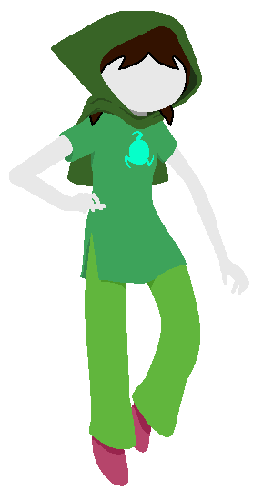

Shit. The TODO pile never stops from getting taller.
|
New Features
9/28/19: Definitely keep checking farragofiction's news section, but today I finally added wiggler breeding for Alumni.
4/11/19: I keep forgetting to update here. The timehole exists and has for awhile and today I let you make caretaker profiles in it. Really you should go over to the main newspostsection.
9/18/18: If Nidhogg is purified over in LOHAE, children going forward will be as well.
8/2/18: Space and Doom aligned Empresses have a mysterious connection to The Land of Horticulture and Essence, I wonder why? (Thus continues my attempt to give all the 'bad' empress traits ways to make up. Space aligned Empresses, for example, are notorious for not giving you enough money, while Doom lets you raise less Wigglers than is ideal. I wonder how this new update counters that???)
6/3/18: Hope aligned Empresses will allow you to view a "what if" of your alumni, using the LifeSim engine.
5/14/18: Due to risk of popular uprising, Light aligned Empresses will no longer declare ties in Blackjack to be in the Houses favor.
5/11/18: Hrrrm.....so. It turns out that certain browsers have a stupidly low save data limit (2MB) and we were pushing up against it. I've added a few alternate save data links to the Meteor page, some of which compress the data and some of which use a different means of GETTING the data that is supposed to get around those limits. Hopefully at least one of those works for those who have had save data problems.
Seadwellers now use the finned bodies for animation as well.
5/5/18: Your caretaker is now nameable if you have the right Empress, and the phrases to describe them is way more detailed now, too.
ALSO, that same kind Empress will let you challenge them to gambling for more funds. I even made it so they can talk to you "in char" and with their doll's quirk.
4/19/18: Life/Doom grubs no longer try to rebel against their strengths.
3/26/18: Maybe that weird 'try to make an item with a stat of negative 0' bug will go away???
3/20/18: Binary Body Bug is fixed. Trolls now can have more than two bodies.
3/17/18: Grubs no longer get automatic makeovers on pupation.
3/11/18: More doll parts, and I'm looking into a bug where sometimes wigglers pupate and look completely different, or have the wrong blood color.
Also. Um. The Edna Mode apocalpyse is now over. I'm so, so sorry that happend.
No new dolls should be forced to have her haircut anymore. To make it up to any effected by that travesty of good taste,
Click This Link. It will let you randomize all your alumni's hair, or any individual or EVEN straight up load a new doll url for an alumni. Use this power responsibly. It's meant to make up for your wigglers getting make overs without you asking for it. Recover as best you can.
3/3/18: The Sign system is a LOT less buggy now. Oh god. It was so bad. It took so long to track down. I'm sorry, ya'll. Getting 100% completion will now be a LOT easier.
It won't fix your existing alumni, sadly, but at least the future generations will be unfairly labled by their dystopic society correctly.
2/4/18: Wiggler eyes are now stable. Wings might only show up post pupation, I don't even know.
1/29/18: thanks to FirankaMipińska for making a Wiki!
1/28/18: Pagination for troll alumni works now. AND we have the Signs View so you can check each kind of troll of your list-o-meter.
1/21/18: Particularly imaginative trolls might see imaginary friends when they are bored.
1/20/18: Mutant colored eyes and wing mutations for pupated trolls are now a thing.
1/17/18: KR gave me new animations for idle grubs. Unenergetic grubs will now wiggle around on their back.
Special thanks to Duckking for wiggler names. Empresses have a bit more complex effect on the sim, and wigglers remember those they have played with a bit.
1/13/18I am officially declaring Wiggler Sim in v1!!!
That means that the features it currently has constitute the base game, and, barring bug and balance fixes and maybe a few more items, it is 'complete'.
On weekends, while I'm mostly focusing on the NPCUpdate for SBURBSim, I will add things like achivements and filtering your alumni by aspect and caste. And I'm likely to add more gameplay features to bring it up to a full on v2 some day.
1/12/18: omfg, There is finally a currency system, which means the Item Shop has been rolled out.
There is even bug fixes and an actual fucking loading screen.
Oh shit, and the Empress Effects are done besides the items.
Speaking of items, thanks goes to paranoiaInsomnia for making caste items like this:  and The Tormented contributed a SCIENCE TRIDENT. and The Tormented contributed a SCIENCE TRIDENT.
1/11/18: Grubs don't use the worse looking crawling bodies as their default portraits anymore.
Working on shop shit.
1/10/18: Grubs can get bored of big dumb hug piles now and wander around occasionally.
1/9/18: Simple, pointless playpen is available for you to shove your grubs into. Without any items to distract them it ends up turning into a giant grub pile p quickly. Oh well.
Next up is me getting a shop set up so you can buy items to shove in there and change your grub's stats.
12/31/17: The sim keeps track of who the current empress is, now.
12/29/17: Mutant grubs have custom endings.
You can get the save data string for your grubs/alumni, so you can use them in other places.
Pupated trolls who refuse to leave the caverns are now kicked out at the next graduation. Also: You can click Here to kick them out manually.
Still working on playpen.
12/26/17: Been working on getting the playpen working (it's the biggest part of the planned features). In the meantime, finally enabled mutant blood trolls.
12/21/17: Pupated trolls are assigned a sign based on caste and highest aspect-stat, lunar sway is currently random.
12/20/17: Wigglers can die from things other than natural causes.
12/19/17: Wigglers have stats and the stats mildly effect the Epilogue with more effects planned.
Known Bugs
Renaming a wiggler right after it changes state (such as hatching) makes it revert to previous state. If you refresh, it's fixed.
Occasionally double clicking will give you twins of an egg.
Expected Future Features: (for v2)
Food/Boredom Mechanic
Click and Drag things in Playpen.
rewards for achievements (like getting all signs in a caste)
Seriously sit down and try to fix my text wrap alg
random egg option (cheaper than other eggs, once currency)
pagination for adopts and alumni
stabilize save data. it corrupts sometimes. WHY???
Load grub from dataString
Play mini games with wigglers. (both existing and new ones. wigglers automatically populated into game)
Wiggler friendships. If two wigglers have a strong bond in the playpen diff interations, ((might be too hard, but, makes it into their epilogue in a tiny blurb???))
vague genetics mechanic (big incestuous slurry (maybe you pick 10 alumni?) gets you a pile of traits (img layer values, palette color values, stats), new wiggler gets traits from all sources, with chance of mutation (including the highly visible ones like candy red). If all visible traits are from same troll, it's a descendant.
Page where you can view grubs genetic source for each "gene" (only one layer deep though)
Filter alumni based on caste/sign/aspect/lunar sway.
mini games with alumni
pointless dream like infinite walkaround game where you meet and talk to all your alumni (dif music in each 'room' determined by highest stat, all alumni have same highest stat?)
|